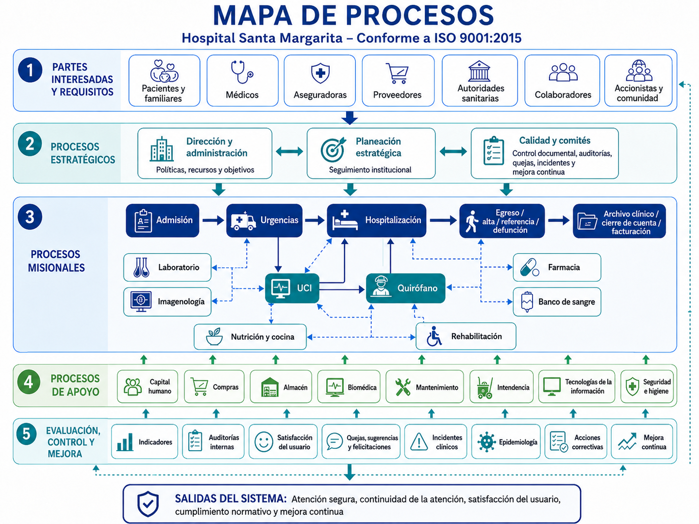

Alcance del SGC y Exclusiones
4.3
Declaración del Alcance
Sin declaración de alcance registrada.
Justificación del Alcance
—
Exclusiones de la Norma
- Sin exclusiones registradas. El SGC aplica en su totalidad.
Exclusiones de la Norma ISO 9001:2015
Análisis FODA — Contexto Interno y Externo
4.1
—
Mapa de Procesos
4.4

Partes Interesadas Pertinentes
4.2
| Parte Interesada | Tipo | Necesidades | Expectativas | Seguimiento | |
|---|---|---|---|---|---|
| Cargando… | |||||